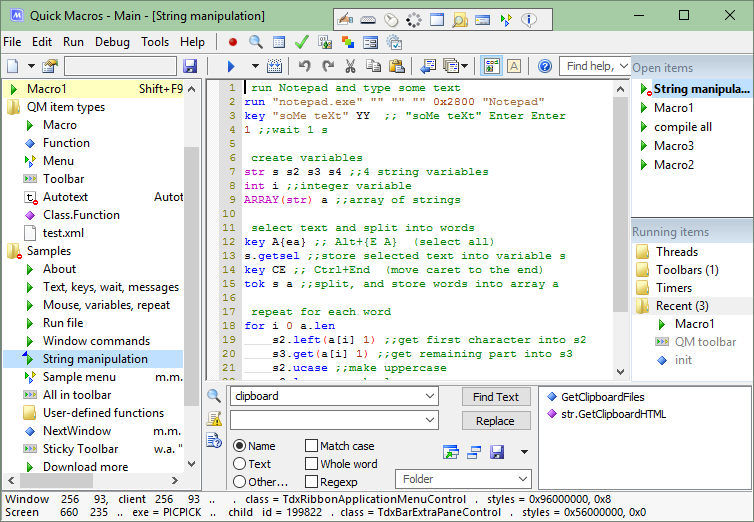

Normally Quick Macros runs all the time. The main window is hidden most of
the time. When you want to add or edit macros, click the QM tray icon  .
To hide the window, click the X button (Close).
.
To hide the window, click the X button (Close).

Top: Toolbars, File menu, Edit menu, Run and Tools menus, Find help, functions, tools
Left: List of items
Center: Code editor
Right: Active items
Bottom: Output, Find, Tips, Status bar
Here you manage QM items that are in currently open file(s).
Click an item to open it for editing.
Middle click to close.
Right click to show the File menu for that item. The Add commands will insert new item there.
Drag and drop to move item(s) to another place.
QM 2.4.0. Right-drag to select (check) multiple items for moving. Use Shift to add to selection, Ctrl to add/remove.
Ctrl+drag and drop to copy (clone) the item.
You can also drag and drop an item to: editor text (adds "run macro" statement), a custom toolbar (adds "run macro" button), an edit control.QM 2.4.0. Alt+click an item to open it in the right editor. Ctrl+click to move to the primary editor. Ctrl+Alt+click to open in both editors.
QM 2.4.0. Deleted items are in the "Deleted" folder. You can: click a deleted item to see its text; undelete; delete from the folder; move items to/from the folder.
Each QM item type has its icon. You can change icons in the Icons dialog.
Blue background - current item. Its text is displayed in the editor. Also there is a small triangle on the icon.
Yellow background - an open item. Read more below, in "Editor" and "Open Items" chapters.
Blue text - recently modified.
Red circle on icon - disabled trigger.
Small "S" on icon - shared folder.
Here is code (text) of currently selected item.
Right click to show the Edit menu.
Click the selection bar to select a line.
You can drag and drop the selected text.
To disable-enable a line, right click the selection bar.
To disable-enable more lines, select them (whole lines) and right click the selection bar, or press key Space or Shift+Space.
To insert or remove tabs at the beginning of multiple lines, select them (whole lines) and press key Tab or Shift+Tab.
You can open multiple items. Opening another item in the code editor does not close current item, just hides it. You can close an item to unload its text from the editor, clear its Undo history, free used memory and remove it from the Open Items list.
You can edit items in two editors. When you open an item, it is opened in the primary editor. Using the Active Items menu you can open it in the secondary editor at the right or bottom, or in both editors.
The Open Items list can be used like tabs in a multitab editor or web browser. It shows items that are currently open. They are yellow in the list at the left. Right click an item to show the Active Items menu. Middle click to close the item. Names of edited items are blue.
In the Running Items pane you can see currently running threads, toolbars, timers and recently launched items. Right click an item to view a menu that allows you to end a thread, find a lost toolbar, reset toolbar settings, stop a timer. Items that are in private folders (in Folder Properties dialog checked "Private functions") are hidden or gray. To hide/unhide, right click a folder or empty space. Does not show threads and timers started by macros running in separate process.
Allows you to quickly find help, functions and tools in:
Type a search query and press Enter. It shows a menu of help topics, code toolbar dialogs, functions and tips that contain the words. Also you can search in the forum and the Internet. The search query can be a question, or a task, or words in any sequence. Finds topics that contain ALL words. Also searches for similar words, eg "get", "gets", "getting". Ignores stop-words, like "a", "to", "how", "it", and nonword characters. Does not support phrase search, operators, etc. Examples:
copy files
how to move a window to a monitor
acc
dialog icon
attaching toolbars to windows
F1 and F2 here work in a similar way as in the code editor. For example, you can type a function or macro name and press F2 to open it or F1 to see its help. If it is a member function, type Classname.Membername.
In the Output pane you can see error messages, out messages, and other notifications. Right click to view a context menu.
In the Find pane you can find macros, find and replace text, rename macros.
Can be used operators AND and OR. They must be in uppercase. The OR operator has higher priority.
To quickly clear a text field, middle click.
You can save current Find pane text and settings, and later load. Saves in current main QM file.
In the Tips pane you can learn how to work with Quick Macros.
When you type or click a function name or some other identifier in the code editor, and then press F1, its help also may be displayed in the Tips pane.
Here you can see mouse-related information.
First line: mouse position in window .. window name . window class . window style, exstyle.
Second line: mouse position in screen .. program .. child window id . child window class . child window style, exstyle.
Here also is displayed short function information and other temporary information.
To enter some often used macro commands, you can use dialogs from the code toolbar. The dialogs can be used only to create new code, but not to edit existing code.
Dialogs are available only for some commands. Actually there are thousands of commands and functions, although many of them can be useful only for programmers. You can find other commands in QM Help, or in popup lists, or using the "Find help, functions, tools" field, or on the Internet.
Many fields in the dialogs are optional. You can leave them empty. The required field always is at the top. For example, in the Run Program dialog, you can specify only the program. Various options initially are set to mostly used values, so you don't have to change them in most cases.
In some dialogs, you can see a Drag picture. You can drag it and drop on an object, and many dialog fields will be filled automatically (you may have to edit something in some cases).
In dialogs you can use variables. To use a variable in a dialog field where text is required, enclose it in parentheses (except when there is a checkbox or other control to specify that it is a variable). Parentheses are not necessary where numeric values are required.
The QM tray icon normally is blue. When QM is disabled (does not respond to triggers of keyboard, mouse and some other types), it is gray. When a macro (not a function or menu) is running, it is red.
Click to show QM window. If the tray icon is hidden (you can set this in Options), click QM shortcut (e.g., in the Start menu), or press Ctrl+Shift+Alt+Q.
Right click to show menu.
Middle click to disable or enable QM.
Ctrl+click to exit QM.